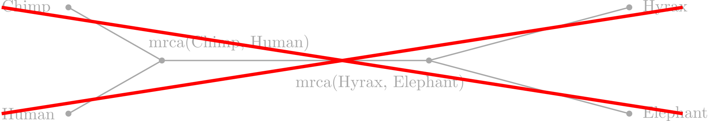

Discrete time-trees:
theory and open problems
Alex Gavryushkin
(Joint work with Erick Matsen and Chris Whidden,
Fred Hutch Cancer Center, Seattle, WA, USA)
September 5, 2016
Phylogenetic tree
Not in this talk
(Discrete) Time-tree

NNI graph

Discrete time-tree space
Graph = Metric

Trees at distance 2

Trees at distance 3
Main idea
(my failed proof)

History of NNI
- Over 25 year of work!
- Over 7 erroneous papers published!